Продолжаем разбираться с работой разных роутеров в режимах повторителя и моста. В этой инструкции мы подробно рассмотрим настройку роутера Tp-Link в режиме моста (WDS). Думаю, что сразу нужно разобраться в вопросе, что же такое WDS на роутерах Tp-Link и чем он отличается от режима работы "Репитер" (повторитель).
Скажу сразу, что на роутерах компании Tp-Link, нет такого режима как репитер, как например у Asus и Zyxel (там, роутеры действительно работают как настоящие репитеры). Только точки доступа от Tp-Link умеют работать как повторители сети. Что касается обычных роутеров, таких как: TL-WR941ND, TL-WR740N, TL-WR841N, TL-MR3220, TL-WR842ND и других моделей, то в них есть возможность настроить режим моста, он же WDS.
Чем отличается режим моста от репитера? Объясняю на просто языке: в режиме моста, мы просто соединяем два роутера по Wi-Fi. Это режим так же можно использовать для расширения Wi-Fi сети. Например, у нас есть какой-то главный роутер, который раздает интернет по Wi-Fi. И нам нужно эту сеть расширить, увеличить ее радиус действия. Мы берем роутер Tp-Link, настраиваем на нем по этой инструкции режим моста, он принимает интернет по Wi-Fi от главного маршрутизатора, и раздает его дальше. Но, в отличии от репитера, у вас будет еще одна беспроводная сеть, со своим именем и паролем.
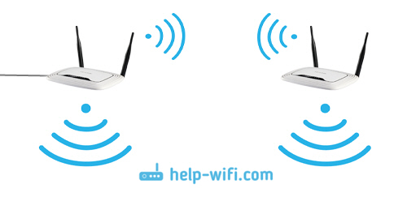
Конечно же, репитер (или роутер в режиме репетира) для этого дела подходит намного лучше. Он просто клонирует, и усиливает уже существующею сеть, а в режиме моста появляется еще одна беспроводная сеть. И вам придется выбирать, к какой сети подключаться.
В комментариях мне недавно задали такой вопрос:
Добрый день. Возник такой вопрос, а как настроить роутер tl-wr941nd на прием Wifi, и последующей передачей интернета через кабель. То есть просто использовать его в качестве приемника. Возможно ли это как-то осуществить?
Настроив свой Tp-Link в режиме WDS, его можно будет использовать как приемник. Что бы подключить к интернету например телевизор, или компьютер, у которых нет Wi-Fi приемника.
Еще несколько моментов:
Настройка моста (WDS) на роутере Tp-Link
1 Первым делом, нам нужно сменить канал беспроводной сети на главном роутере. Обратите внимание, что роутер, к которому мы будем подключаться в режиме моста, должен быть настроен. То есть, интернет должен работать, он должен раздавать Wi-Fi сеть.
У меня в роли главного роутера выступает D-link DIR-615. Он раздает Wi-Fi сеть с названием "DIR-615_help-wifi.com". Значит, нам нужно на главном роутере, в настройках установить статический канал для беспроводной сети. Я не знаю, какой у вас роутер, поэтому, смотрите инструкцию Как найти свободный Wi-Fi канал, и сменить канал на роутере? В ней я писал о смене канала на устройствах разных производителей.
Если у вас например в качестве основного роутера так же Tp-Link, то канал можно сменить в настройках (которые открываются по адресу 192.168.1.1 (192.168.0.1), или смотрите эту инструкцию), на вкладке Wireless. В поле Channel укажите статический канал. Например 1, или 6. Нажмите кнопку Save для сохранения настроек.
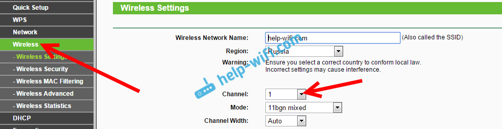
Статический канал установили. Из настроек основного маршрутизатора можно выходить.
2 Переходим к настройке роутера, который будет у нас настроен в режиме WDS. У меня это модель TL-MR3220. Заходим в настройки роутера. Если не знаете как, то смотрите инструкцию по входу в панель управления на Tp-Link.
Для начала, нам нужно сменить IP-адрес нашего Tp-Link. Это нужно для того, что бы в сети не было двух устройств с одинаковыми IP. Например, если у главного IP-адрес 192.168.1.1, и у второго - 192.168.1.1, то получится конфликт адресов. Перейдите на вкладку Network - LAN. В поле IP Address замените последнюю цифру с 1 на 2. У вас получится адрес 192.168.1.1, или 192.168.0.1. Нажмите кнопку Save. Роутер перезагрузится.
Нужно знать, какой IP адрес у главного роутера, к которому мы собрались подключатся. Если у него 192.168.1.1, то на роутере, который хотим подключить по WDS меняем адрес на 192.168.1.2. А если у главного адрес 192.168.0.1, то второму задаем 192.168.0.2. Важно, чтобы они были в одной подсети.
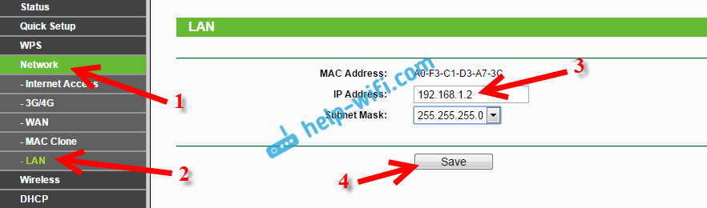
Снова зайдите в настройки, только IP-адрес будет уже другой - 192.168.1.2. Который мы указали выше.
3 Перейдите на вкладку Wireless. В поле Wireless Network Name можете указать имя второй беспроводной сети. А в поле Channel обязательно укажите такой-же канал, который установили в настройках главного роутера. У меня 1-ый канал.
Дальше, установите галочку возле Enable WDS Bridging. И нажмите на кнопку Survey.
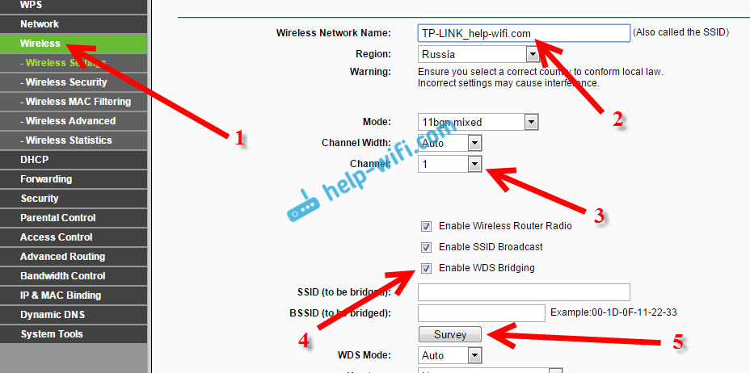
Выберите из списка нужную сеть, с которой роутер будет получать интернет. Напротив нужной сети нажмите на ссылку "Connect".
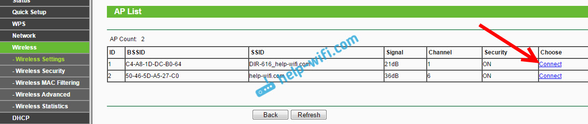
4 Нам осталось только напротив выпадающего меню Key type выбрать тип безопасности вашей сети (к которой мы подключаемся). И в поле Password указать пароль к этой сети. Для сохранения, нажмите на кнопку Save.
Перезагрузите роутер. Отключив питание, и включив его обратно, или в панели управления нажав на ссылку "click here".
5 После перезагрузки, снова заходим в настройки. И прямо на главном экране (вкладка Status), смотрим раздел Wireless. Напротив WDS Status должно быть написано Run.
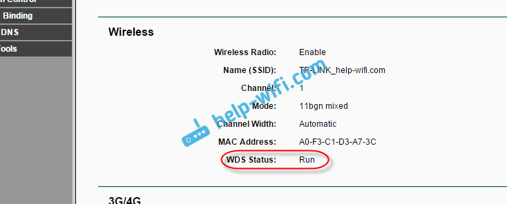
Это значит, что наш Tp-Link уже подключится к главному роутеру. И должен раздавать интернет по Wi-Fi и кабелю. Настройка закончена.
Если вам необходимо, что бы IP-адреса выдавал главный роутер (а не тот, который настроен в режиме моста), то на роутере, который мы только что настраивали, нужно отключить DHCP сервер. Сделать это можно в настройках, на вкладке DHCP. Установив переключатель возле Disable, и сохранив настройки.
6 Не забудьте поставить пароль на Wi-Fi сеть, которую будет раздавать настроенный нами маршрутизатор. Можете посмотреть подробную инструкцию по защите Wi-Fi на Tp-Link. Там все просто. В настройках, на вкладке Wireless - Wireless Security, выделите пункт WPA/WPA2 - Personal(Recommended), в поле Wireless Password задайте пароль (минимум 8 символов), и нажмите снизу кнопку Save.
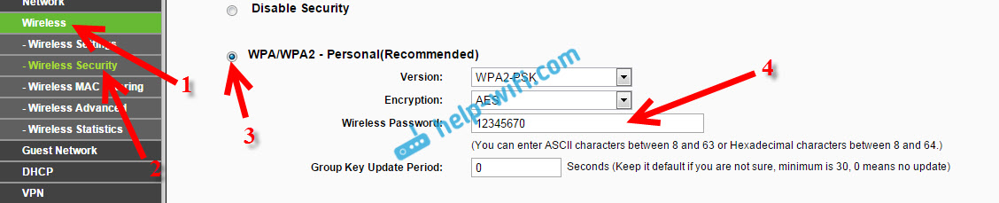
Теперь у нас роутер Tp-Link получает интернет от главного роутеара, и раздает его дальше. Выберите правильное место для установки второго роутера, что бы он был в радиусе действия главного маршрутизатора.
Настройка беспроводного моста (2,4 ГГц и 5 ГГц) на новой версии прошивки
Решил обновить данную статью и добавить актуальную информацию по настройке WDS на маршрутизаторах TP-Link с новой прошивкой. Которая в голубых тонах. Там все настраивается немного иначе. Сейчас покажу.
Если у вас маршрутизатор с новой панелью управления, то необходимо перейти в раздел "Дополнительные настройки" – "Системные инструменты" – "Параметры системы". Если у вас роутер двухдиапазонный, то там вы увидите возможность настроить режим моста в двух диапазонах. На частоте 2,4 GHz и 5 GHz.
1 Установите галочку "Включить мост WDS" возле необходимой частоты. Я, например, поставил галочку возле 2,4 ГГц. Нажмите на кнопку "Поиск"
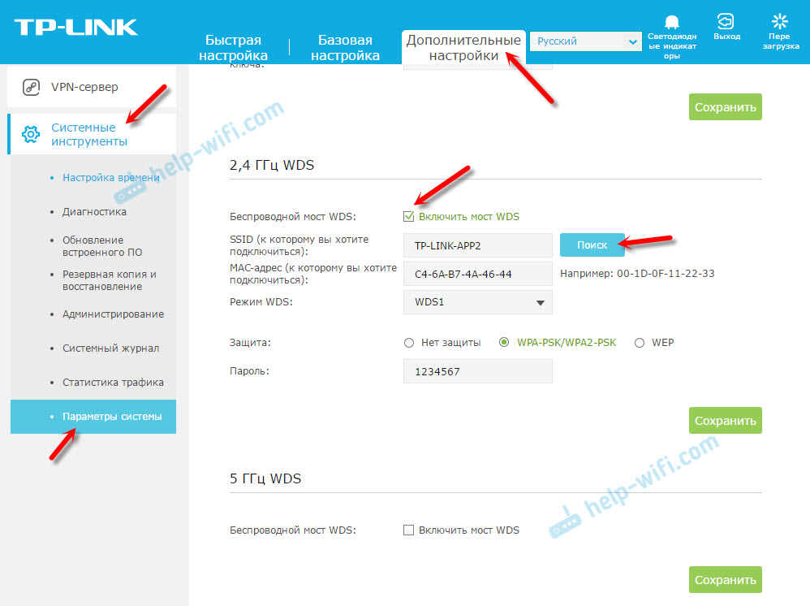
2 Выберите из списка сеть, к которой вы хотите подключится. Просто нажмите "Выбрать" напротив своей сети. Думаю, вы без проблем найдете свою сеть в списке доступных.
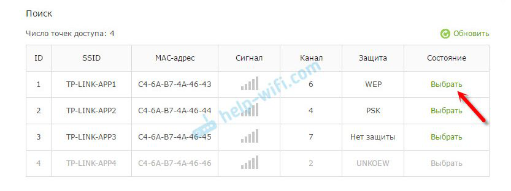
3 Если необходимо, можете сменить настройки защиты (Защита, Пароль) и нажмите на кнопку "Сохранить". Если будете ставить пароль, то выбирайте "WPA-PSK/WPA2-PSK". Так же сеть можно оставить без пароля. Если это необходимо.
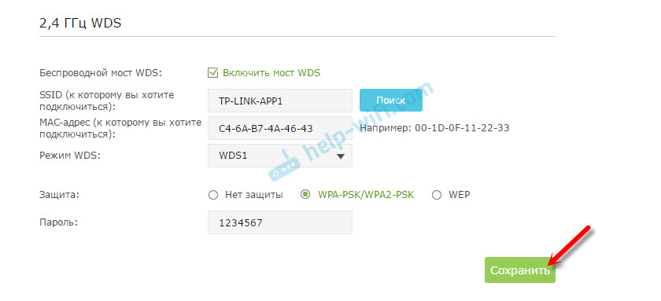
Ротуре по Wi-Fi подключится к другому роутеру, и будет получать интернет по беспроводной сети.
Если понадобится отключить DHCP-сервер, то сделать это можно на вкладке "Дополнительные настройки" – "Сеть" – "DHCP-сервер".
Если не работает интернет по кабелю в режиме WDS
Если выполнить настройки, которые я показывал выше, то интернет будет работать только по Wi-Fi, а при подключении к роутеру (который в режиме WDS) по кабелю, интернет не работает. Без доступа к интернету. Это конечно же не дело, и использовать роутер в качестве приемника Wi-Fi сети, например, не получится. Поэтому, я написал вопрос в поддержку TP-LINK, и они мне ответили.
При настройке функции WDS вы получаете IP адресацию от изначального роутера (то устройство, к которому подключается WDS-клиент) как по проводной, так и без проводной сети. Для правильной настройки данной функции вам необходимо обязательно отключать DHCP-сервер на том оборудовании, на котором настроен WDS-мост. Также вам необходимо, чтобы его локальный IP-адрес был в той же подсети, что изначальный роутер.
Я проверил все на TP-LINK TL-WR740N, и действительно, после отключения DHCP-сервера интернет сразу заработал по сетевому кабелю. Отключить DHCP совсем не сложно. В настройках маршрутизатора откройте вкладку DHCP, установите переключатель возле Disable (отключить), и сохраните настройки.
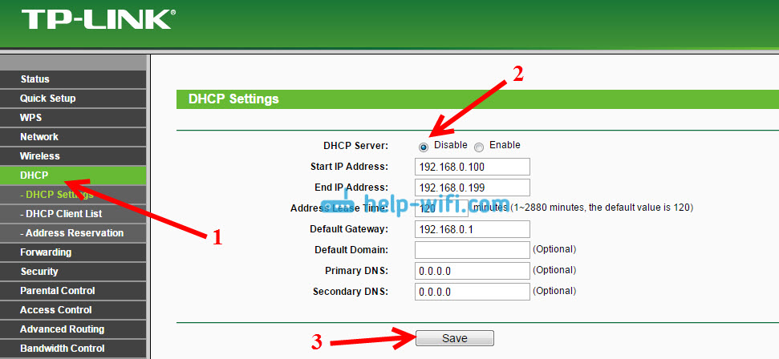
Перезагружаем роутер, и все отлично работает. У меня сразу появился интернет по кабелю. В настройки этот роутера можно зайти по адресу, который мы установили на втором шаге. У меня это 192.168.1.2.